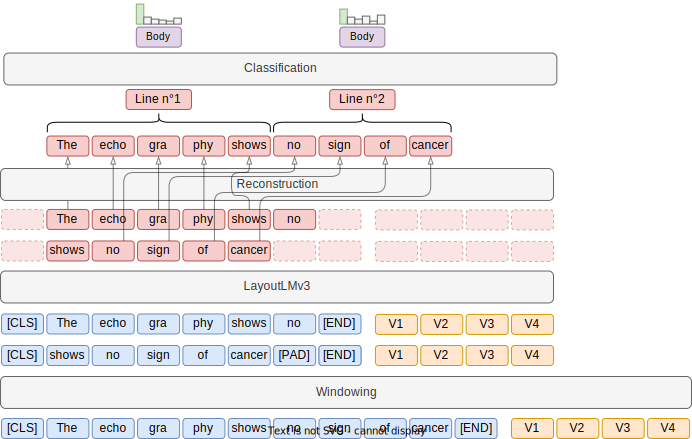

edspdf.pipes.embeddings.huggingface_embedding
HuggingfaceEmbedding
Bases: TrainablePipe[EmbeddingOutput]
The HuggingfaceEmbeddings component is a wrapper around the Huggingface multi-modal models. Such pre-trained models should offer better results than a model trained from scratch. Compared to using the raw Huggingface model, we offer a simple mechanism to split long documents into strided windows before feeding them to the model.
Windowing
The HuggingfaceEmbedding component splits long documents into smaller windows before
feeding them to the model. This is done to avoid hitting the maximum number of
tokens that can be processed by the model on a single device. The window size and
stride can be configured using the window and stride parameters. The default
values are 510 and 255 respectively, which means that the model will process windows
of 510 tokens, each separated by 255 tokens. Whenever a token appears in multiple
windows, the embedding of the "most contextualized" occurrence is used, i.e. the
occurrence that is the closest to the center of its window.
Here is an overview how this works in a classifier model : 
{kind=link}
Examples
Here is an example of how to define a pipeline with the HuggingfaceEmbedding component:
from edspdf import Pipeline
model = Pipeline()
model.add_pipe(
"pdfminer-extractor",
name="extractor",
config={
"render_pages": True,
},
)
model.add_pipe(
"huggingface-embedding",
name="embedding",
config={
"model": "microsoft/layoutlmv3-base",
"use_image": False,
"window": 128,
"stride": 64,
"line_pooling": "mean",
},
)
model.add_pipe(
"trainable-classifier",
name="classifier",
config={
"embedding": model.get_pipe("embedding"),
"labels": [],
},
)
This model can then be trained following the training recipe.
Parameters
| PARAMETER | DESCRIPTION |
|---|---|
pipeline |
The pipeline instance
TYPE:
|
name |
The component name
TYPE:
|
model |
The Huggingface model name or path
TYPE:
|
use_image |
Whether to use the image or not in the model
TYPE:
|
window |
The window size to use when splitting long documents into smaller windows before feeding them to the Transformer model (default: 510 = 512 - 2)
TYPE:
|
stride |
The stride (distance between windows) to use when splitting long documents into smaller windows: (default: 510 / 2 = 255)
TYPE:
|
line_pooling |
The pooling strategy to use when combining the embeddings of the tokens in a line into a single line embedding
TYPE:
|
max_tokens_per_device |
The maximum number of tokens that can be processed by the model on a single device. This does not affect the results but can be used to reduce the memory usage of the model, at the cost of a longer processing time.
TYPE:
|
quantization_config |
The quantization configuration to use when loading the model
TYPE:
|
kwargs |
Additional keyword arguments to pass to the Huggingface
DEFAULT:
|